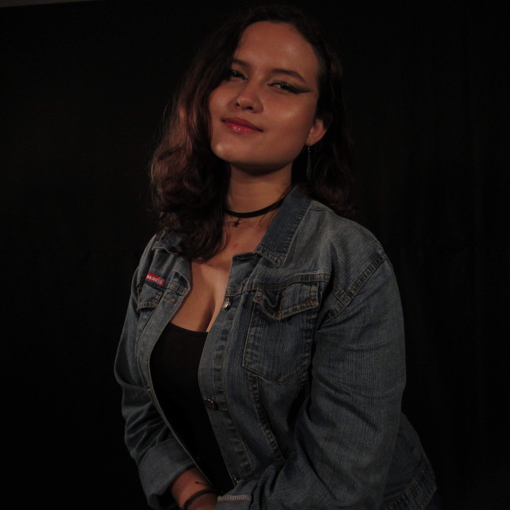
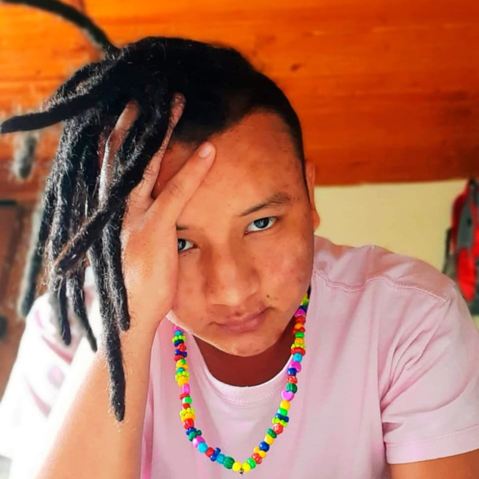
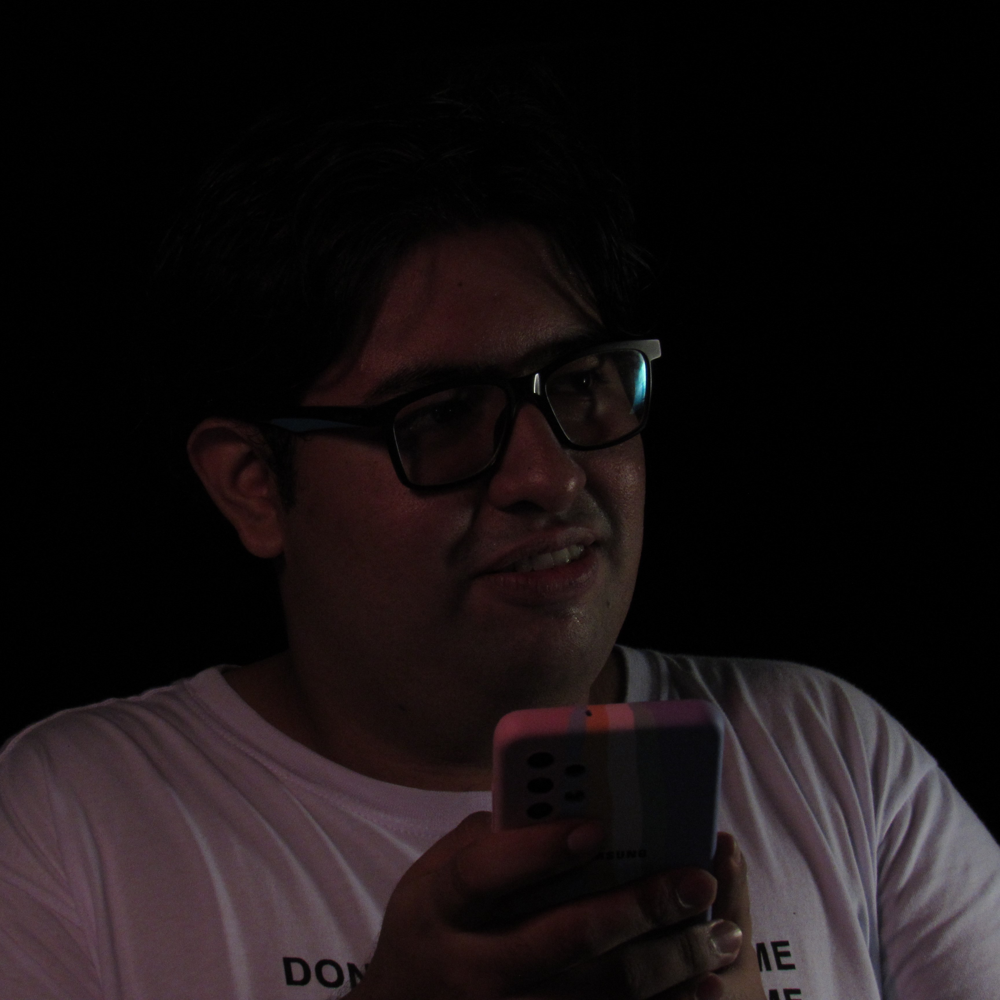

Cultura General
Este proyecto ha sido un proyecto radial desarrollado con el ánimo de acercar la cultura general a la comunidad uniquindiana, con el fin de acercar el conocimiento a todos.
El equipo detrás de este proyecto.
Hecho con amor y calidad.
Luisa María Ríos
Directora.
Juan Pablo Álzate
Subdirector.

Juliana Fernández
Coordinadora general.

Jhon Eider Tapasco
Musicalizador.

Jesús Román Sánchez
Editor y programador.
“La cultura es aquello que permanece en un hombre cuando lo ha olvidado todo. ”
Émile Henriot
/
Físico & químico